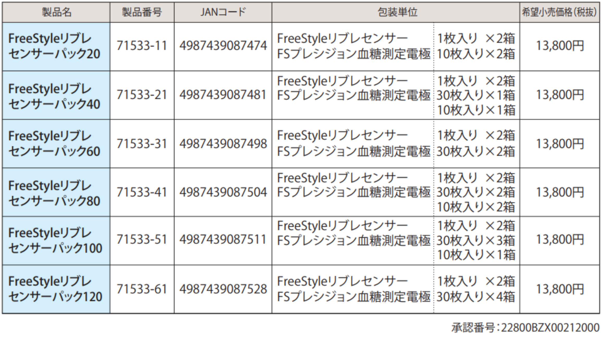
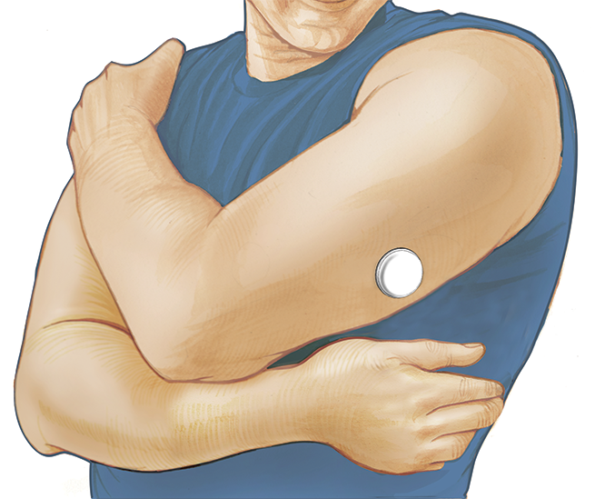

FreeStyleリブレ フラッシュグルコースモニタリングシステム
概要

血糖値の急激な変動時などには血糖自己測定を行うことを前提に、FreeStyleリブレは低血糖リスクを軽減し、患者さんの糖尿病管理を補完します 1)
1）Bolinder J et al. Lancet 2016 Sep 9. pii: S0140-6736(16)31535-5. doi: 10.1016/S0140-6736(16)31535-5. [Epub ahead of print]
※測定結果に基づく臨床診断は、臨床症状や他の検査結果と合わせて医師が総合的に判断してください。[診断の際には総合的な判断が必要であるため]
※測定結果により医師の指示なく経口薬又はインスリンの投与量を変更しないでください。[治療の変更は医師の指示に従う必要があるため]
※間質液グルコース値が血液中のグルコース値を正確に反映していないときや、本システムで低血糖または低血糖の危険が報告されたとき、または症状が本システムの測定値と一致しないときは、グルコース値が 急激に変化している可能性があります。その場合は、指先穿刺による血糖測定を行う必要があります。
データ管理ソフト
システム要件 2018年03月現在
• Microsoft Windows 7 (32または64 bit)
• Microsoft Windows 8 (32または64 bit)
• Microsoft Windows 10 (32または64 bit)
• macOS High Sierra
° 接続には測定器本体に付属のケーブルをご使用ください。
° USB2.0ハブ、1.6GHｚデュアルコアプロセッサ、2GB RAM以上が搭載されたコンピュータが必要です。 PDF形式のレポートを表示するため、Adobe® Readerが推奨されます。
° 測定器データのコンピュータへの保存は、PDF形式（レポート画面）もしくはテキストファイル形式でのみ 行なうことができます。本ソフトウェア内には記録されません。
 添付文書ダウンロード
添付文書ダウンロード電極
FSプレシジョン血糖測定電極
- 必要血液量：0.6μL
- 測定時間：5秒
- 先端および上部点着可能
- 個別包装
β-ケβトン測定電極Ⅲ
- 必要血液量：1.5μL
- 測定時間：10秒
- 測定範囲：0.3～8.0mmol/L
- 先端および上部点着可能
- 個別包装

よくある質問
- フラッシュ・グルコース・モニタリング(検査)とはどのようなものですか?
- FreeStyleリブレシステムとはどのようなものですか?
- FreeStyleリブレは保険償還できますか？
- FreeStyleリブレにはどのような製品ラインアップがありますか?
- FreeStyleリブレ フラッシュグルコースモニタリングシステムは、SMBGやCGMとどのように違うのですか?
- MRI や CT スキャンを受ける際にセンサーを外さなければなりませんか?
- なぜSMBGでの較正が必要ないのですか?
- FreeStyleリブレシステムには何が含まれていますか?
- センサーの大きさはどれくらいですか?
- センサーは装着中気になりますか?
- センサー装着中に入浴、シャワー、水泳、運動をすることができますか?
フラッシュグルコースモニタリングは新しい区分に分類される製品で、より詳細な血糖状態を知るうえで必要とされる十分なグルコースデータを、より手軽に、より簡単な操作で得られるようにデザインされています。フラッシュグルコースモニタリングのユニークな点は、センサー上をReaderですばやくスキャンすることによってグルコースデータを収集できることです。フラッシュグルコースモニタリングシステムのもうひとつの重要な特徴は、小型で使い捨てのセンサーにあります。このセンサーは、指先穿刺によるキャリブレーションは不要でありながら最長14日間継続して使用できるのに加えて、グルコースデータを自動測定し、記録し、直近８時間分のデータを保存することができます。※
※グルコース値が急激に変化している状況で測定した間質液グルコース値が正確に血糖値を反映していない可能性がある場合、低血糖または低血糖の可能性が報告された場合、また測定値と症状が一致してない場合には、血糖測定器を用いて指先での測定を行ってください。
FreeStyleリブレの特徴は下記の通りです。
本製品は自己血糖値測定間の血糖値トレンドを推定し、自己血糖値測定による糖尿病の血糖値管理を補助することを目的とします。
- • 本製品は間質液中のグルコース値を連続的に測定・記録する製品です。 1)
-
• 痛みなく、いつでも、どこでも、服の上からでも、1秒で測定でき
2)
、その時の間質液中のグルコース値・トレンド・過去8時間の履歴が表示され記録されます。 3) - • センサーは工場出荷前較正済みで指先穿刺による較正は不要です。
- • センサーは耐水性で入浴中、シャワー中、水泳中も装着することが可能です 4)
- • 最長14日間にわたりグルコースデータを提供します。
- 1) グルコース値が急激に変化している状況で測定した間質液グルコース値が正確に血糖値を反映していない可能性がある場合、低血糖または低血糖の可能性が報告された場合、また測定値と症状が一致してない場合には、血糖測定器を用いて指先での測定を行ってください。
- 2) 厚さ4cm 以内の衣服の上からReader で読み取ることができます。
- 3) 血糖値の変化に対する間質液グルコース値の生理的なタイムラグは約5～10分間です。
Basu A et al. Diabetes 2013 Dec. 62(12): 4063-4067. Time Lag of Glucose From Intravascular to Interstitial Compartment in Humans.
Published online 2013 Nov 16 doi: 10.2337/db13-1132 PMCID: PMCPMC3837059 - 4) センサーは水深1メートルまで耐水性能が保証されています。30分以上水に浸さないでください。
2017年9月1日より保険収載されることとなりました。今回FreeStyleリブレは、その製品の革新性より新技術(C2)としての保険収載を認められましたので、来年4月の診療報酬改訂時に新規技術料として設定されることとなります。
改訂時までの本年9月1日から来年3月末までは、現状のSMBGの価格体系に基づいた準用での保険償還となり、その詳細は以下の通りです。
○ 準用技術料
C150 血糖自己測定器加算
- 1 月 20 回以上測定する場合 400 点
- 2 月 40 回以上測定する場合 580 点
- 3 月 60 回以上測定する場合 860 点
- 4 月 80 回以上測定する場合 1,140 点
- 5 月 100 回以上測定する場合 1,320 点
- 6 月 120 回以上測定する場合 1,500 点
留意事項）
フラッシュグルコース測定機能を持つ血糖自己測定器を使用する場合であっても、フラッシュグルコース測定以外の血糖自己測定をした回数を基準に算定する。
なおこれまでのSMBG同様、全てのインスリン等使用患者様がFreeStyleリブレの保険の対象となります。
またその他施設制限等、保険適応にあたっての特別な制限はございません。
８つの製品ラインアップを用意しております。センサーと電極をセットにした6つのパッケージに加え、リーダー単体及びリーダー10台のパッケージで の販売となります。詳細は以下のとおりです。

従来の血糖モニタリングでは、ユーザーである患者に指定した時間で血糖測定することを指導します。
この場合患者は、その血糖値がどのように変化しているのかや、その血糖値が今後どうなっていくかの情報ではなく測定時点の情報を得ます。
連続グルコースモニタリングでは、
システムによっては1～5分ごとにグルコース濃度が得られることから、グルコース濃度の変動についてさらに詳しく把握することができます。グルコース濃度がどのように変化するかを理解することによって、患者およびその医療チームが適切な措置を取ることができ、治療の調整を行うことができます。
FreeStyleリブレシステムから得られた間質液中グルコース濃度に関する情報は、自己血糖値測定間の血糖値トレンドを推定し、自己血糖値測定による糖尿病の血糖値管理を補助する製品です。FreeStyleリブレシステムを使用すると持続グルコースモニタリング（CGM）と血糖モニタリング（BGM）の両方のメリットが得られます。本システムにより片手でグルコース変動の全体像が得られ、一方、センサー上をReaderでスキャンするだけで直ちに現在の間質液中グルコース測定値を得ることもできます。
X線、MRI（核磁気共鳴画像法）またはCT（コンピュータ断層撮影法）スキャンなど、強度の磁気や電磁放射線を含む受診を予約している場合、装着したセンサーを取り外し、検査終了後に新しいセンサーを貼付する必要があります。このような手順がシステムの性能に及ぼす影響については評価されておりません。
工場出荷前に較正済みです（ファクトリーキャリブレーション）。 ファクトリーキャリブレーション後、較正なしで14日間にわたる正確性と安定性が確認されています。
FreeStyleリブレシステムは主に、携帯式のReaderと使い捨てのセンサーの2つの構成品からなっています。
Readerを使ってセンサーをスキャンすることでグルコース測定値を簡単に取得することができます。センサーの装着にはセンサーパックとセンサーアプリケータを用います。センサーアプリケータを利用して、上腕の後ろ側にセンサーを貼付します。
＜センサー＞
小型で使い捨て。上腕後部に最長14日間装着し、指先穿刺によるキャリブレーションなしで連続的にグルコースを測定・記録。
＜Reader＞
コンパクトで携帯式。現在のグルコース測定値、直近8時間分のグルコース値推移に加え、グルコース変動を確認できるトレンド矢印を表示。最大90日間のグルコースデータが保存され、Readerのでいつでも各種レポートを閲覧できるほか、様々な記録を入力することが可能。
高さ：5 mm、直径：35 mmです。


Abbott Diabetes Care が実施した試験では、調査対象患者の93.4%（n=30）がセンサー装着中に皮下の不快感を訴えませんでした。

はい。センサーは入浴中、シャワー中、水泳中、運動中も装着することができます。
ただし、 水深1mより深いところにセンサーを入れないでください。また、30分以上水に浸さないでください。粘着剤 はセンサーを最長14日間快適に固定できるよう設計されています。